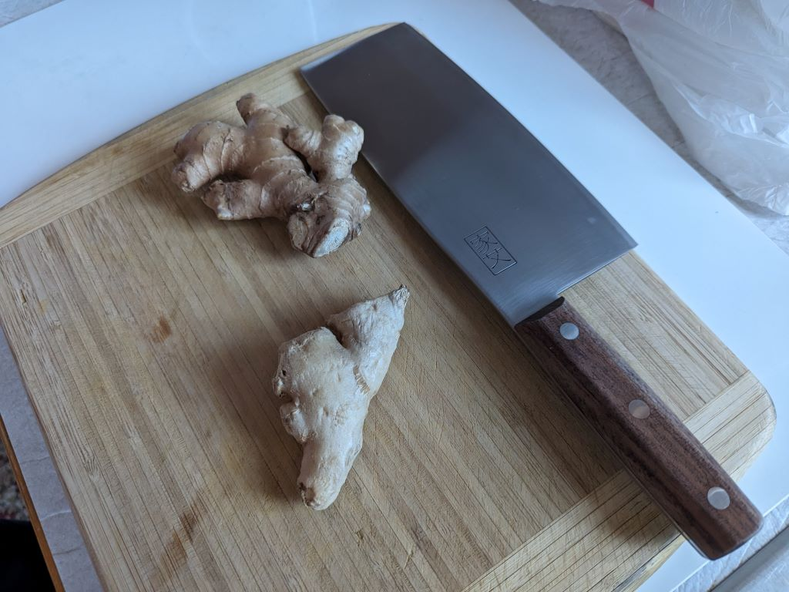
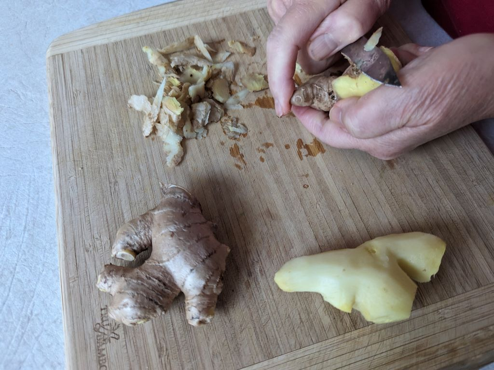
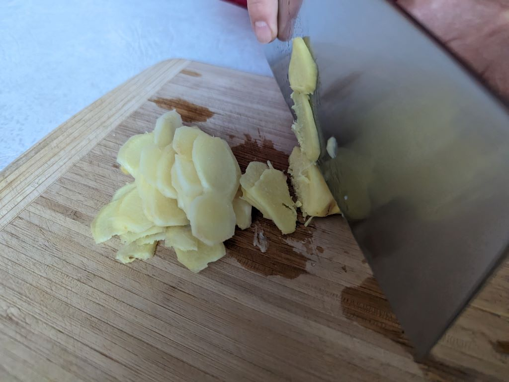
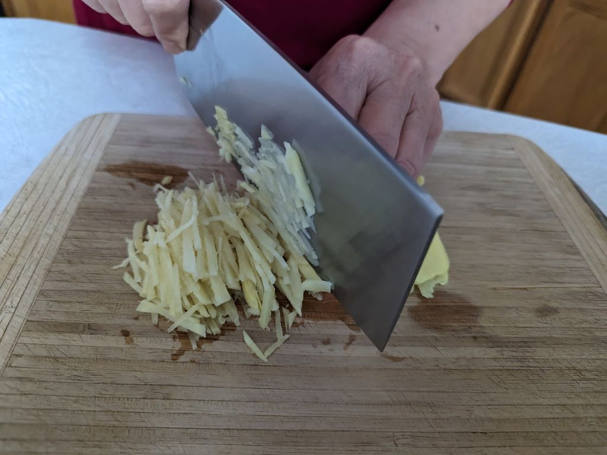
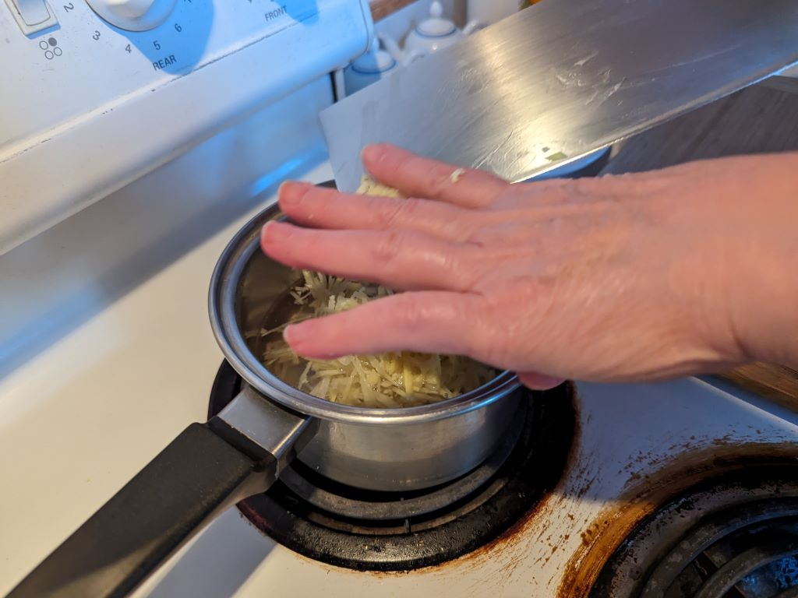
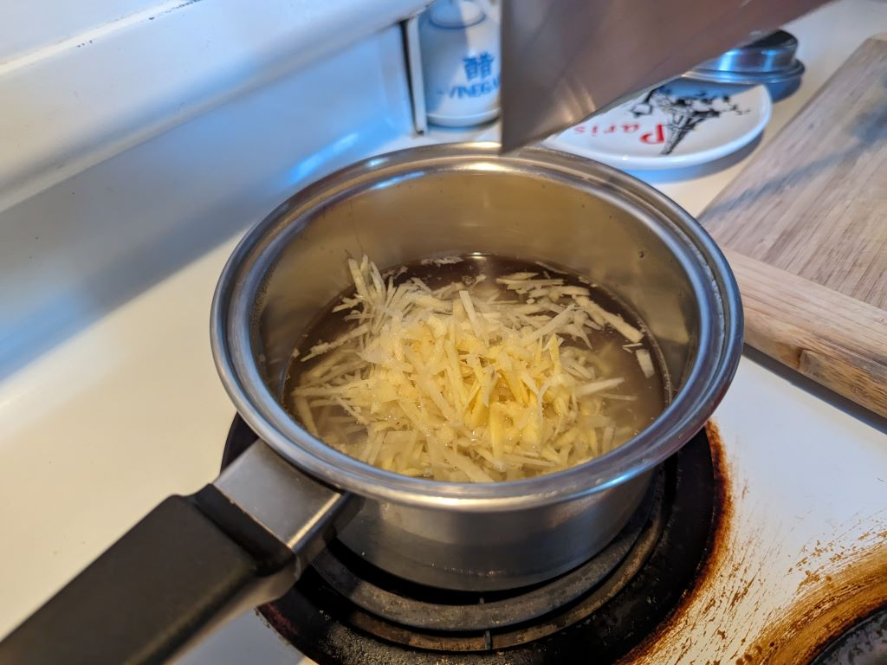
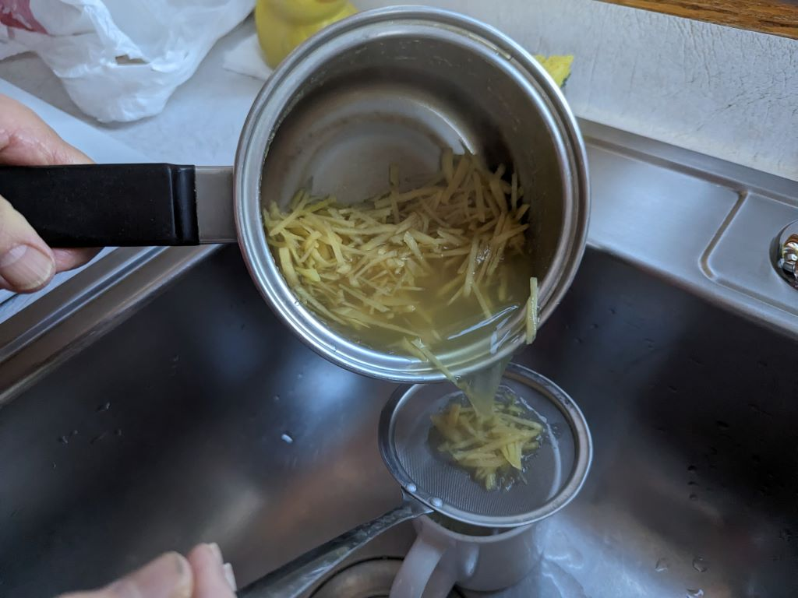
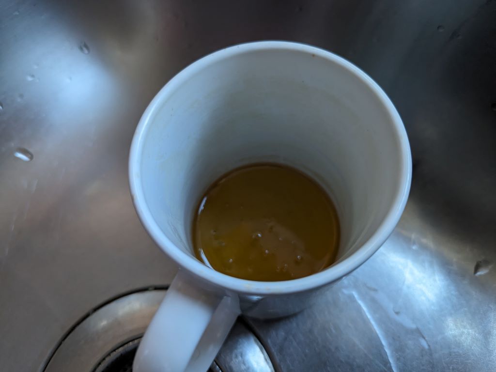
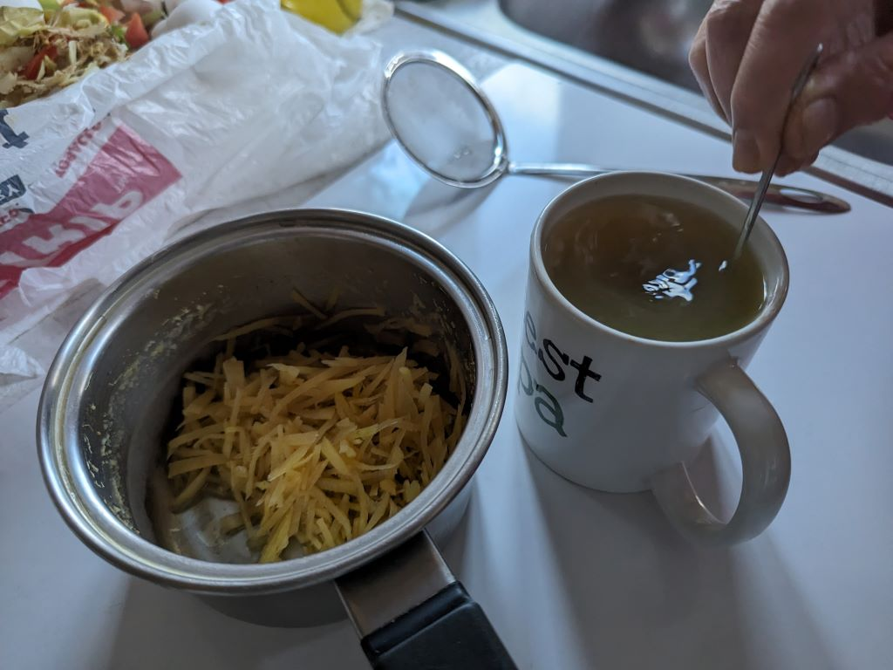
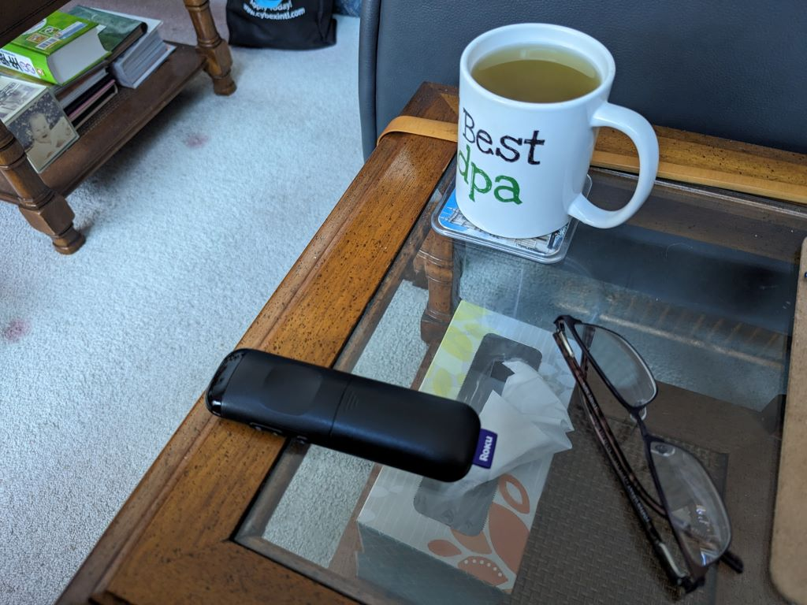

The Making of Honey-Ginger Tea It all starts out with two pieces of ginger and a sharp knife.  To start the process, Mei-O pares the ginger. We go through a lot of ginger, shopping for it at least once a week. The strength of the tea often varies depending on where we buy the ginger from. (There are three pieces of ginger pictured here. She cut a piece off the big one and only used half of it.)  The pared ginger is first sliced like this, ...  ...then like this.  It's then put into a pot of just plain water...  ...to boil for 10 minutes.  When our Google 10-minute timer tells her it's done, it's strained into...  ...a cup that's been waiting with just a small amount of honey in it.  It's then stirred well to get the honey and ginger water to mix and become honey-ginger tea.  I always have to wait a while, since it's too hot to drink right off the stove. (The tea cools rather quickly, but the cup is always too hot to put up to my mouth.) I usually drink it while relaxing, sitting in my recliner in the living room. It's quite satisfying. |